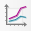

Atlante con grafici¶
Introduzione¶
Realizzare un atlante utilizzando come layer di copertura il vettore regioni ISTAT in relazione (1:m) con il vettore delle province ISTAT. Il layout deve contenere/visualizzare:
- una mappa della regione corrente;
- una mappa delle province della regione corrente;
- un grafico (bar plot), legato alla regione corrente, che visualizzi un parametro a scelta delle province;
- tabella attributi delle province relative alla regione corrente;
- una panoramica;
- altri oggetti utili alla comprensione dell'atlante. (a seguire il risultato atteso - gif animata)
{kind=link}
Cosa occorre¶
Per realizzare l'atlante descritto sopra occorre, oltre a QGIS, il plugin DataPlotly che va installato (menu Plugins | Gestisci ed Installa Plugin...), i CONFINI DELLE UNITÀ AMMINISTRATIVE A FINI STATISTICI AL 1° GENNAIO 2024 (che trovi nella sezione Dati)
Suggerimento
Creare un nuovo geopackage e importare i due shapefile Reg01012020_g_WGS84 e ProvCM01012020_g_WGS84, inoltre, salvare il progetto QGIS dentro lo stesso geopackage.
Iniziamo¶
Importare dati¶
Importare in QGIS i due layer Reg01012020_g_WGS84 e ProvCM01012020_g_WGS84
{kind=link}
Creare relazione¶
Creare relazione1 1:m tra i due layer
{kind=link}
Aggiungere viste¶
Aggiungo due viste per utilizzarle successivamente nell'atlante: regioni, province
{kind=link}
Nuovo Layout di stampa¶
Creare nuovo layout ( Ctrl + P ) e lo chiamiamo atlante con grafici
{kind=link}
Note
Per impostazioni predefinite la pagina è A4 orizzontale!
- Aggiungo la prima mappa e la chiama regioni;
- aggiungo una seconda mappa e la chiama panoramica;
- una terza mappa e la chiama province;
per rinominare un oggetto mappa doppio clic sul nome, nel pannello Oggetti.
{kind=link}
- dal Pannello Atlante
{kind=link}
- dal Pannello Prorietà dell'Oggetto (mappa
regioni)
{kind=link}
stessa cosa va fatta per la mappa province, in modo da avere due mappe legate allo stesso atlante:
{kind=link}
Impostare la Panoramica della mappa regioni
{kind=link}
adattare l'estensione della mappa (panoramica) al riquadro utilizzando l'icona e la rotellina del mouse con ctrl premuto.
{kind=link}
{kind=link}
{kind=link}
{kind=link}
{kind=link}
{kind=link}
Aggiungere grafico Bar Plot utilizzando l'icona 
{kind=link}
{kind=link}
cliccare su (4) Setup Selected Plot per accedere al setup del grafico:
{kind=link}
al punto (3) inserire questa espressione:
{kind=link}
{kind=link}
{kind=link}
Altri oggetti¶
Per aggiungere una etichetta utilizzare l'icona e, tramite espressione, aggiungere il campo che contiene il nome della Regione corrente:
{kind=link}
{kind=link}
Per aggiungere una etichetta utilizzare l'icona e digitare Regioni e Province Italiane:
{kind=link}
Aggiungere in basso a destra una etichetta con scritto: Realizzato con QGIS.
{kind=link}
{kind=link}
Sistemare¶
Dopo aver aggiunto tutti gli oggetti, occorre sistemare il tutto, per esempio: centrare e formattare meglio le etichette; sistemare meglio le varie mappe; formattare meglio la tabella attributi ecc...
Guide orizzontali e verticali¶
Ecco una prima sistemata con l'aggiunta di guide
{kind=link}
Formattare testo etichette¶
Formattare il testo delle etichette: dimensione, colore e allineamento
{kind=link}
Tabella Attributi¶
Formattazione tabella: tipo carattere, colore, dimensione, numero campi ec...
{kind=link}
dalle proprietà Attributi è possibile: riordinare i campi, rinominarli, eliminarli, aggiungerli ecc...
{kind=link}
edito l'Aspetto della tabella:
{kind=link}
Grafico¶
Configurare le varie opzioni del grafico
{kind=link}
Mappe¶
La mappa panoramica Bloccare Layer e stile in modo da non modificare la visualizzazione della panoramica, questo perché il layer verrà successivamente modificato utilòizzando una tematizzazione tramite regola:
{kind=link}
Per visualizzare solo la regione corrente (e non le altre confinanti) un modo è quello di tematizzare il layer usando questo filtro nella regola:
{kind=link}
ecco cosa accade nel layout:
{kind=link}
Per visualizzare solo le province della regione corrente (e non le altre confinanti) un modo è quello di tematizzare il layer usando questo filtro nella regola:
{kind=link}
ecco cosa accade nel layout:
{kind=link}
Aggingere numero pagina e il totale delle pagine (sono due variabili):
{kind=link}
Esportazione¶
Per esportare il PDF singolo della pagina corrente, pigiare l'icona :
{kind=link}
{kind=link}
per esportare file singolo PDF dell'atlante:
{kind=link}
per esportare tanti file PDF quanti sono le pagine dell'atlante, togliere la spunta all'opzione Esporta file singolo se possibile e configurare Espressione del nome di file in uscita usando anche il costruttore di espressioni:
{kind=link}
{kind=link}
{kind=link}
per maggiori dettagli, la guida ufficiale di QGIS:
Avanzato¶
Generatore di geometrie¶
Visualizzare, aumentando lo spessore linea, il confine della regione corrente nella mappa province, questo si realizza tramite il generatore di geometrie:
{kind=link}
risultato:
{kind=link}
Colore Bar Plot¶
Modificare colore delle barre del grafico Bar Plot:
{kind=link}
Colori categorizzati Bar Plot¶
È possibile tematizzare il layer delle Province con il metodo Categorizzato e associare un colore per ogni Provincia, questi colori possono essere usati anche nelle barre del Bar Plot; il processo è un po' lungo ma si puo' fare. Solo un piccolo cenno: occorre creare un nuovo campo e popolarlo con i colori (es: RGB) da utilizzare sia nella categorizzazione che nel grafico.
DISCLAIMER
Il presente materiale didattico è stato realizzato e aggiornato da Salvatore Fiandaca nell'ambito del Academy Pigrecoinfinito - 2026.
Sviluppato utilizzando QGIS 3.44 Solothurn LTR nel periodo Maggio 2026.
Materiale rilasciato con licenza Creative Commons Attribuzione 4.0 Internazionale (CC BY 4.0): sei libero di condividerlo e modificarlo, anche per fini commerciali, a condizione di riconoscerne la paternità. Vedi la pagina Licenza uso.
©2026 Salvatore Fiandaca - CC BY 4.0.
-
dal menu Progetto ↩